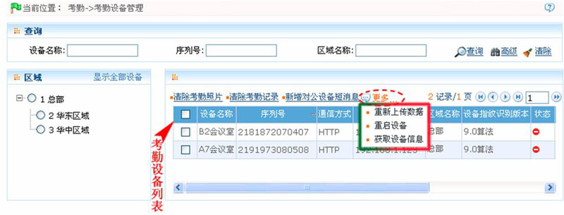
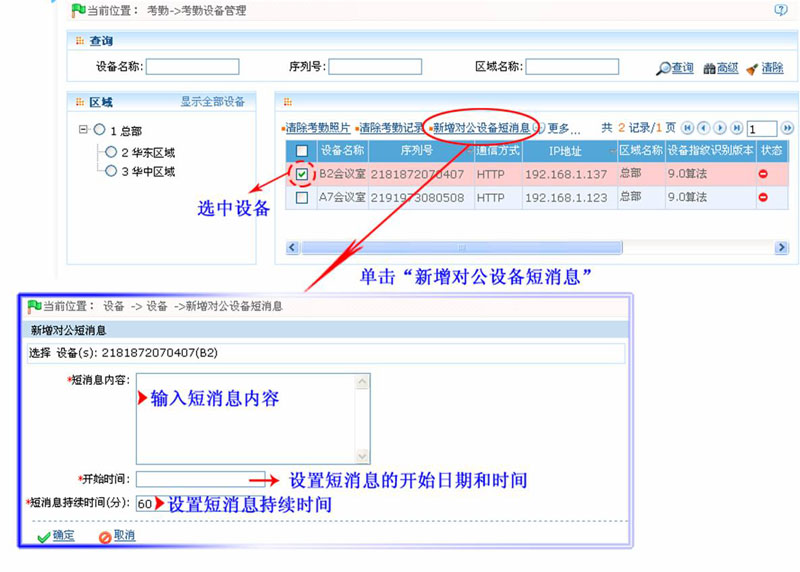
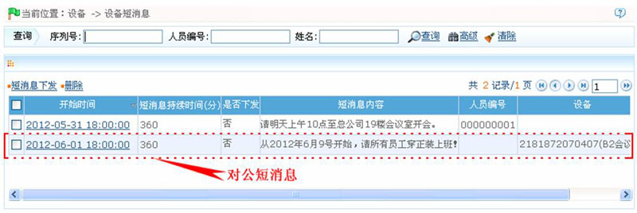
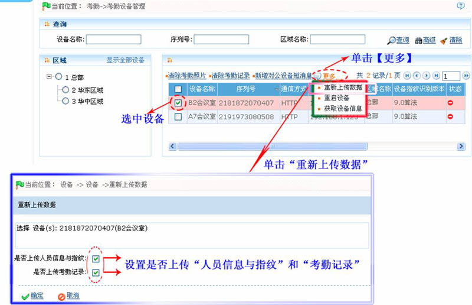

7.8 考勤设备管理
考勤设备连接到系统后，如果设备设置时勾选【实时上传数据】，则所有考勤记录会自动上传至系统，否则需要在5.2.4 设备维护中，选择考勤设备，点击【同步所有数据】，即将与设备所属同一区域的全部人员同步到设备中。
点击【考勤】 【考勤设备】，进入考勤设备管理主界面，以列表方式显示当前连接的所有考勤设备。
【考勤设备】，进入考勤设备管理主界面，以列表方式显示当前连接的所有考勤设备。

设备信息包括：设备名称、序列号、设备型号、通信方式、IP地址、区域名称、设备指纹识别版本、状态、最近联机时间、用户数、指纹数和记录数。
目前版本的系统支持最多连接100台考勤机。
1、清除考勤图片
清除考勤机上的全部考勤图片（考勤照片、黑名单照片）。
选择设备，点击【清除考勤图片】，进入清除确认页面，点击【确定】则清除图片，或点击【取消】放弃操作。
2、清除考勤记录
清除考勤机上的全部考勤记录。
选择设备，点击【清除记录】，进入清除确认页面，点击【确定】则清除记录，或点击【取消】放弃操作。
3、新增对公设备短消息
（1）、单击选中设备，然后单击【新增对公设备短消息】按钮，进入新增对公设备短消息页面：

短消息内容：输入短消息内容。
开始时间：设置短消息的开始日期和时间，日期和时间的设置，请参见附录1 常用操作中的8. 选择日期与时间。
短消息持续时间：输入短消息的持续时间。
（2）、设置完成并保存后，在设备短消息（单击【设备】 【设备短消息】）页面将显示该条对公短消息，如下图所示：
【设备短消息】）页面将显示该条对公短消息，如下图所示：

 备注：用户添加的对公短消息，必须通过短消息下发功能下发到对应的设备中，相关人员才能查看到相应短消息。短消息的的下发操作请参见5.4.1短消息下发。
备注：用户添加的对公短消息，必须通过短消息下发功能下发到对应的设备中，相关人员才能查看到相应短消息。短消息的的下发操作请参见5.4.1短消息下发。
4、重新上传数据
用户可以选择是否重新上传考勤机上的人员信息与指纹、是否重新上传考勤记录到服务器。
（1）、单击选中设备，然后单击【更多】 【重新上传数据】按钮，进入重新上传数据页面：
【重新上传数据】按钮，进入重新上传数据页面：

（2）、根据需要选择是否上传“人员信息与指纹”和“考勤记录”，设置完成后单击【确定】按钮开始上传数据。
 注意：支持【重新上传数据】方式将考勤机上的人员及其指纹批量上传到服务器，但如果遇到超时，就会中断，需要再重新执行。
注意：支持【重新上传数据】方式将考勤机上的人员及其指纹批量上传到服务器，但如果遇到超时，就会中断，需要再重新执行。
5、重启设备
可以在系统中远程重启设备。
选择设备，点击【更多】 【重启设备】，进入重启设备的确认页面，点击【确定】重启选中设备，或点击【取消】放弃操作。
【重启设备】，进入重启设备的确认页面，点击【确定】重启选中设备，或点击【取消】放弃操作。
6、获取设备信息
获取设备的算法版本、人员数、指纹数、考勤记录数、固件版本。
 注意：设备自动连接至服务器后，再更换设备指纹算法时，需重新获取算法信息后再通讯，避免指纹模板保存错误或下载失败。
注意：设备自动连接至服务器后，再更换设备指纹算法时，需重新获取算法信息后再通讯，避免指纹模板保存错误或下载失败。
选择设备，点击【更多】 【获取设备信息】，进入获取设备信息的确认页面，点击【确定】进行下载，或点击【取消】放弃操作。
【获取设备信息】，进入获取设备信息的确认页面，点击【确定】进行下载，或点击【取消】放弃操作。